|
|
|
|
|
|
|
|
The following describes how to set up operations that run when the alarm becomes active.
In the Variable Editor, double-click the variable's row number to display the Variable Properties dialog box.
Click the Alarm tab and select the Alarm checkbox.
Click the Trigger Action button to display the Alarm Trigger Actions dialog box.
Click Add, to add an action.
Click the Function column's cell and select the type of function from the drop down list.
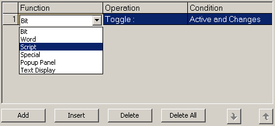
Click the operation cell and define the operation details.
Depending on the selected function, a dialog box appears allowing you to configure the operation.
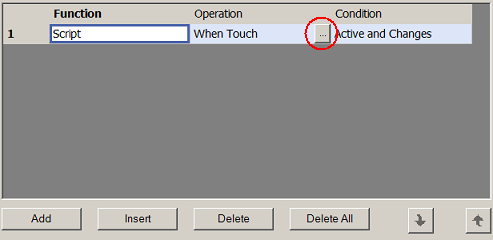
|
Bit |
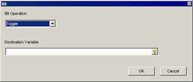
|
|
Word |
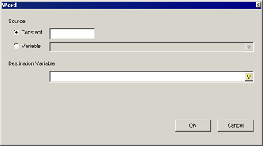 Source: Select whether you want to write a constant or variable value to the destination variable.
|
|
Script |
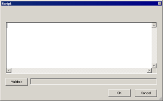 The script written in this dialog window will execute once the alarm is triggered. For more information on scripts, see Chapter 18, Scripts. |
|
Special |
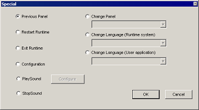 Run one of these operations:
|
|
Popup Panel |
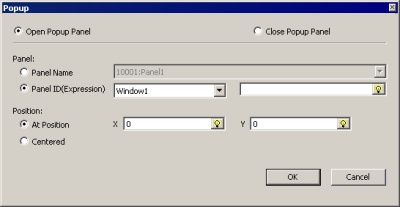 Define the popup window settings. For more information on popup windows, see Chapter 15, Popup Windows. |
|
Text Display |
The Text Display function displays a text file, part of a text file, or a line from a text file when an alarm is triggered. If you want to use the Text Display operation for an alarm, specify a variable for File Number, Block Number, and Row Number, as required. 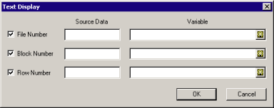 |
|
File Number Selects the text file that is displayed in the Text Display part. In the Source Data field, define the 3-digit number that you have specified in the text file's Alias name. In the Variable field, define the variable that is assigned to the File Number Variable property in the Text Display part. 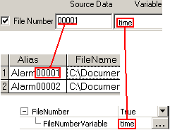 |
|
|
Block Number You can specify which block in a text file to display. In the Source Data field, define the block number you want to display. Block numbers are counted from 0. In the Variable field, define the variable that is assigned to the Block Number property in Text Display part. 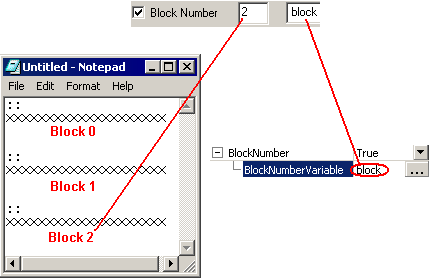 |
|
|
Row Number You can specify which line in a text file to display. In the Source Data field, define line number you want to display. Line number is counted from 0. In the Variable field, define the variable assigned to the Line Number property in the Text Display part. 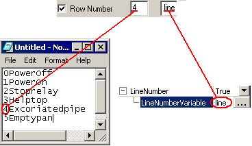 |
Double-click the Condition cell to display the Condition dialog box, and set the condition settings as required.
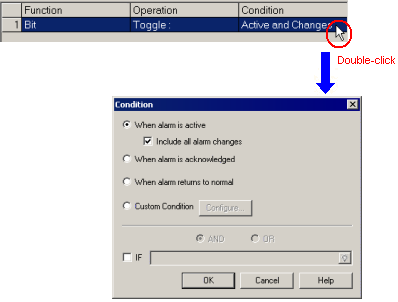
|
When alarm is active |
The operation runs whenever the alarm is triggered Select Include all alarm changes to run the operation whenever the alarm's state changes. For example, when using Limit Alarms and the variable enters the Lo alarm state, the alarm action is triggered. If the alarm condition changes, for example, from Lo to LoLo, the alarm action is triggered again. |
|||||||||
|
When alarm is acknowledged |
The operation runs whenever the alarm is acknowledged. |
|||||||||
|
When alarm returns to normal |
The operation runs whenever the alarm returns to normal. |
|||||||||
|
Custom Condition |
When selected, the Configure button is enabled. Click Configure to open the Custom Condition dialog box. 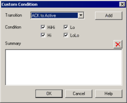 Select a Transition and define the conditions. The selected Transition defines which alarm state changes will trigger this action. To place a custom condition in the Summary, click Add. To remove a custom condition from the Summary, highlight it and click . The available Condition settings depend on these property definitions:
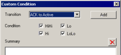
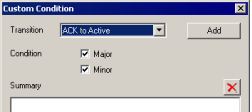
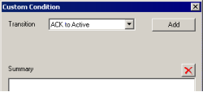 |
|||||||||
|
IF |
The operation runs only if the specified BOOL or integer variable or expression is True. The following table shows each data type and their True and False values.
The AND OR option is only available for Integer and BOOL variables and when the Alarm Condition and If check boxes are selected. By using this setting, you can set whether both the Alarm and If conditions have to be true, or if just one of the conditions have to be true, before the alarm operation is run. When selected, the AND/OR options and expression field are enabled. When not selected, the AND/OR options and the expression field are grayed out.
|
Repeat these steps to add more operations to the Alarm Trigger Action as required.

You can add up to 32 actions

When you add multiple alarm operations they run in the order they appear in the dialog box. But because operations don't wait for the previous operation to complete before starting, it may seem as if operations do not run in sequence.
Previous Panel, Restart Runtime, Exit Runtime, Configuration, and Change Panel operations execute after all other actions have executed.
Reset the order or operations by using the up and down arrows in the Alarm Trigger Actions dialog box.
Click OK to close the Alarm Trigger Action dialog box.